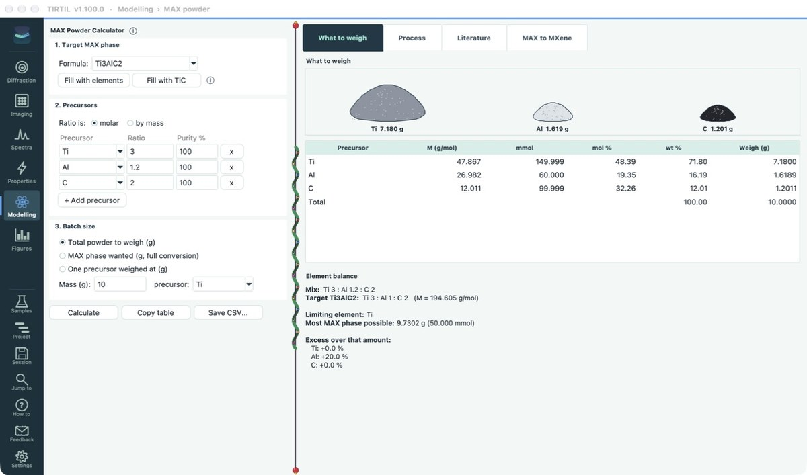
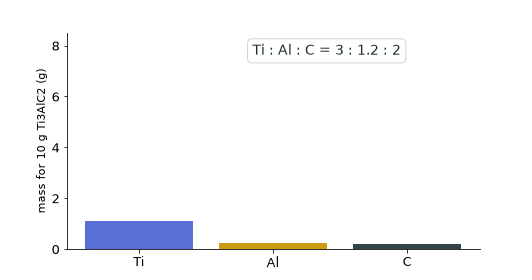

Modelling
MAX powder
How much of each powder to weigh.

Steps
Fill with elementsPick the MAX phase and the precursors (elements, TiC...).Calculatethe masses for a batch size, with an Al excess if you want one.- In the MAX to MXene part of this page,
Animate the Process...shows how the MAX phase is etched, for each route.
How it works

Worked example
10 g of Ti3AlC2 from Ti : Al : C = 3 : 1.2 : 2 needs Ti 7.38 g, Al 1.66 g (20 % excess) and C 1.23 g.